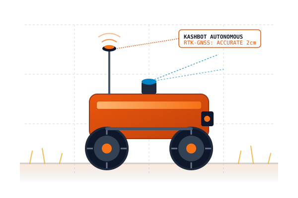

Engineering Intelligent Robotics for Modern Agriculture
Kashbot Agri Systems develops autonomous field robotics, precision agricultural machinery, intelligent orchard canopy spraying systems, and targeted laser weed management prototypes engineered for practical, resource-conscious farming.

Pioneering Deep-Tech Agricultural Engineering in Kashmir
Kashbot Agri Systems Private Limited is an agricultural technology company focused on developing agricultural robotics, precision agricultural machinery, and intelligent automation solutions for modern farming.
We aim to help make agricultural operations more precise, efficient, and practical through the integration of engineering, robotics, sensing technologies, and intelligent control systems. Based in Buchpora, Srinagar, our engineering addresses high-value horticultural challenges—from high-density apple orchards to terraced terrain—replacing blanket input wastage with measurable, targeted precision.
Agricultural Robotics
Autonomous robotic platforms engineered for rugged terrain, row-crop navigation, and precision field operations.
-
TRL-5 ValidatedAll-terrain electric drivetrain with centimetre-accurate RTK-GNSS navigation, LiDAR obstacle avoidance, and universal modular tool hitching.
- Field Tested
- Sensor AI
- Dual RTK
- Navigation
- Dual-Antenna RTK-GNSS (±1.5 cm)
- Runtime
- 8 Hours continuous duty
- Traction
- Independent 4WD electric hub motors
- Payload
- Up to 180 kg equipment hitch
-
AutonomousCoordinated aerial-ground telemetry mapping canopy density, localized moisture deficiency, and chlorophyll levels across high-density orchards.
- Field Tested
- Sensor AI
- Sensors
- 5-band Multispectral + Thermal
- Resolution
- 1.2 cm/pixel GSD at 30m altitude
- Telemetry
- Direct 915MHz MAVLink ground link
- Processing
- On-edge NDVI calculation
No robotic platforms match the active filter criteria.
Precision Agricultural Machinery
Development of machinery and control systems intended to make agricultural operations more targeted, measurable, and efficient.
-
±2% Flow PrecisionMicro-solenoid pulse-width modulation regulating fluid flow rates dynamically proportional to forward rover speed and localized tree canopy volumes.
- Field Tested
- Sensor AI
- Frequency
- 50 Hz individual nozzle pulsing
- Response
- < 15 ms valve actuation
- Bus Protocol
- ISOBUS / CAN 2.0B integration
- Pressure
- Adjustable 2.0 – 6.5 Bar
-
Targeted DeliveryDirect root-zone nutrient micro-injection driven by real-time soil optical sensor feedback to minimize run-off and nitrate leaching.
- Field Tested
- Sensor AI
- Accuracy
- ±1.0 mL per injection site
- Depth
- Adjustable 5 – 25 cm subsurface
- Wastage
- Zero surface atmospheric loss
- Compatibility
- Liquid organo-mineral formulas
No precision machinery systems match the active filter criteria.
Intelligent Spraying Systems
Smart spraying technologies for orchards and horticultural settings, using canopy sensing and adaptive control to curb chemical drift.
-
85% ReductionUltrasonic and stereoscopic vision sensors continuously profile tree geometry in real-time, shutting off nozzles in gaps to eliminate blanket overspray.
- Field Tested
- Sensor AI
- Patent Pending
- Chemical Saving
- 65% to 85% vs. conventional blast
- Sensors
- Triple ultrasonic + Depth cameras
- Droplet VMD
- 180 – 240 μm drift-controlled
- Target Crops
- Apple, Pear, Walnut, Almond
-
95% Underside WrapApplies an electrostatic charge to atomized micro-droplets, forcing them to wrap around and adhere to leaf undersides for superior disease control.
- Field Tested
- Sensor AI
- Charge Voltage
- 12 kV negative corona charge
- Adhesion
- 3.8x higher deposition density
- Water Volume
- Reduces carrier water by 60%
- Safety
- Encapsulated low-current design
No spraying systems match the active filter criteria.
Laser-Based Weed Management
Laser lawn-weeding prototype exploring targeted weed treatment as an eco-conscious alternative to blanket synthetic herbicide application.
-
Sub-mm AccuracyHigh-speed dual-axis galvano mirror deflecting targeted thermal laser pulses directly onto weed apical meristems, rupturing cells in milliseconds.
- Sensor AI
- Zero Chemical
- Patent Pending
- Laser Source
- Fiber-coupled continuous / pulsed
- Target Accuracy
- ±0.8 mm spatial beam precision
- Detection Time
- < 20 ms via edge neural model
- Soil Impact
- 100% Zero chemical residue in soil
-
60 FPS InferenceCustom deep learning vision engine trained on diverse high-altitude Kashmiri weeds to instantly differentiate crop seedlings from invasive species.
- Sensor AI
- Zero Chemical
- Model Arch
- Quantized MobileNetV4 / YOLO-Edge
- Classification
- 98.4% species validation score
- Hardware
- Embedded Tensor NPU (32 TOPS)
- Shutter
- Global shutter RGB-NIR sensor
No laser weeding prototypes match the active filter criteria.
Research, Prototyping and Automation
Engineering-led development bringing together mechanical systems, electronics, sensors, embedded computing, and software.
-
RuggedizedShock-resistant, IP67 industrial embedded compute module bridging automotive CAN buses, ROS2 robotics nodes, and real-time sensor feedback.
- Field Tested
- Sensor AI
- Ingress
- IP67 Dust & Moisture Sealed
- OS
- Real-Time Linux Kernel (PREEMPT_RT)
- Temp Range
- -20°C to +60°C operating
- I/O
- Triple CAN, Ethernet, RS485, PWM
-
15 km RangeSolar-harvesting sensor node transmitting real-time root volumetric water content, soil EC, and canopy leaf wetness to the central farm dashboard.
- Field Tested
- Sensor AI
- Radio
- Sub-GHz LoRaWAN 865-867 MHz
- Power
- Supercap + 2W Monocrystalline solar
- Battery Life
- 5+ years zero maintenance
- Probes
- FDR Moisture, Salinity, Temperature
No research modules match the active filter criteria.
5-Stage Practical Engineering Lifecycle
We follow a rigorous, practical, engineering-driven approach from initial field observation to controlled prototype validation.
Problem Identification
Identify a specific agricultural problem through direct grower engagement in valley orchards and farming communities.
Concept Engineering
Develop a suitable mechanical and automation concept using CAD kinematics and finite element analysis.
Hardware Integration
Integrate relevant sensors, control systems, and computing hardware onto ruggedized electrical buses.
Prototype Validation
Build and test prototypes under defined conditions in Srinagar trial plots to evaluate real-world reliability.
Refinement & Deployment
Evaluate performance and refine the design iteratively before considering broader field deployment.
Calculate Your Input Savings
Evaluate the quantifiable chemical reduction, fuel savings, and operational payback achieved by replacing conventional broadcast machinery with targeted canopy automation.
Engineering Practical Agricultural Solutions
Our purpose is to contribute to more efficient and technology-enabled agriculture by developing solutions that address real operational needs. We aim to bridge agricultural engineering and emerging automation technologies through practical design, testing, and continuous improvement.
Advancing Resource-Conscious Robotics
To contribute to the advancement of agricultural robotics and precision machinery, helping farmers and the agricultural sector access practical, intelligent, and resource-conscious technologies.
Partner with Kashbot Agri Systems
Whether you are an orchardist seeking field trials, an agricultural institution exploring research partnerships, or a commercial distributor, our Srinagar engineering team is ready to collaborate.
-
Location:
Buchpora, Srinagar, Jammu & Kashmir – 190020, India -
Email:
info@kashbot.in -
Phone:
7006613634